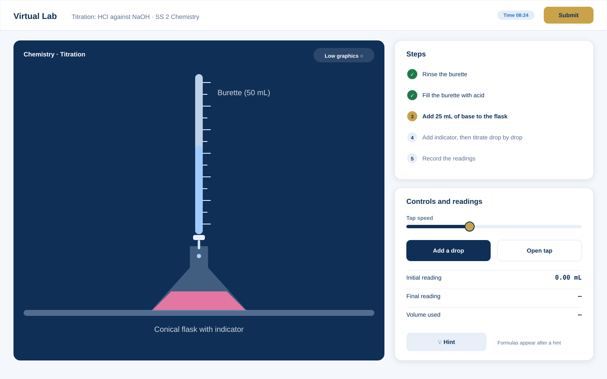
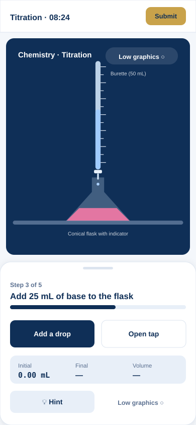
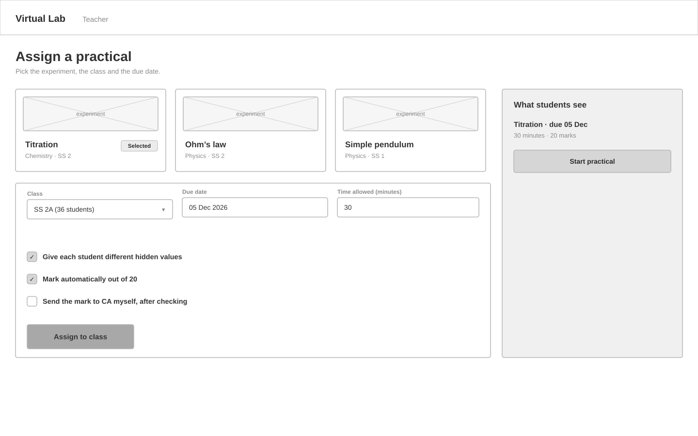
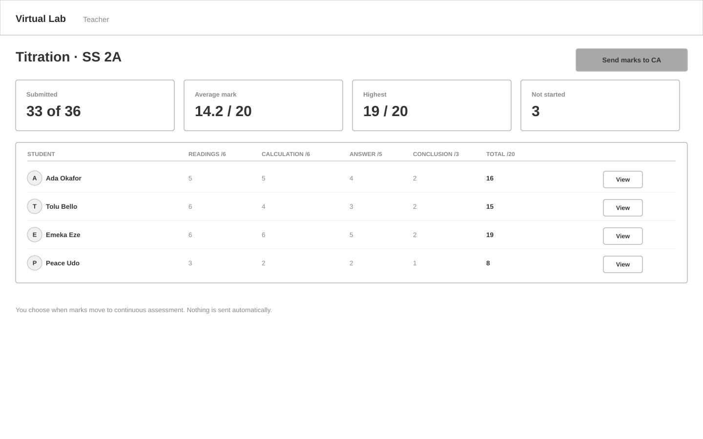

Titration and Ohm’s law run in a 3D scene on a phone, and students are marked automatically. Performance is the design constraint, because the audience has inexpensive phones and old laptops.
Year
2026
Category
Education · 3D · Prototype
My role
Designer and front-end engineer
Stack
Three.js · WebGL · JavaScript
Status
Prototype

Titration on desktop
(01)
Problem
Many schools have no lab equipment, but exams still ask about practicals.
Phones and old laptops cannot run a heavy 3D scene.
Practical marks must be fair and cannot be copied from a friend.
This led to· Students practising theory only · Unfair or copied marks · Unusable 3D on cheap devices
(02)
Solution
A guided, phone-first lab: render only when something changes, a Low graphics switch, a step list, formulas only after a hint, and per-student hidden values with line-by-line marking.
(03)
Key design decisions
1.
Phone first
The 3D scene on top, the controls in a bottom sheet within thumb reach.
A Low graphics switch for older devices.

Titration on a phone
2.
Guided, not crowded
A numbered step list with the current step highlighted.
Formulas appear only after a hint, so students think first.
3.
Marking that explains itself
A seeded generator gives each student different hidden values.
Every mark line carries a note saying what to improve.
Marking breakdown
4.
A second experiment from the same pattern
Ohm’s law with a live voltage-against-current graph.
Ohm’s law
(04)
Outcome
60 frames per second on an old Intel HD 520 laptop in the prototype.
21 automated checks cover the marking logic.
A working prototype with two experiments.
(05)
My role
Interaction and layout design.
Three.js scene, render loop and marking logic.
Performance tuning and tests.
(06)
Key takeaway
When the device is the limit, performance is not a technical detail. It is the design.
Concept screens. These are design ideas I have drawn but not built.

Concept: teacher assigns a practical

Concept: class results
See the code Real code from this product, with the problem it solves.